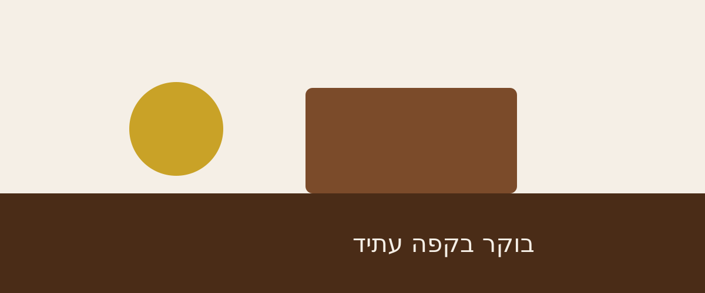

בית | התפריט | עלינו | צרו קשר

בית קפה שכונתי ברחוב הרצל 42 בתל אביב, פתוח כבר 11 שנים.
למעבר לתפריט המלא · להזמנת שולחן
הגעתי לעבוד שעה, נשארתי חמש.
| יום | פתיחה | סגירה |
|---|---|---|
| ראשון – חמישי | 07:00 | 20:00 |
| שישי | 07:00 | 15:00 |
| שבת | סגור | |
© 2026 קפה עתיד · הרצל 42, תל אביב